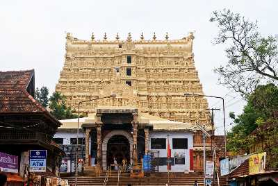

Thiruvananthapuram
Located in the southwestern tip of India, Thiruvananthapuram is bound by the Arabian Sea in the west and Tamil Nadu in the east. Named after Anantha Padmanabha or Lord Vishnu, the city is home to many ancient temples. But the landmark is the Sree Padmanabha Swamy Temple around which the city has been built on seven low hills. The wooded highlands of the Western Ghats in the eastern and northeastern borders give Thiruvananthapuram some of the most enchanting picnic spots. A long shoreline with internationally renowned beaches, historic monuments, backwater stretches and a rich cultural heritage make this district a much sought-after tourist destination. Clean and green, Thiruvananthapuram, the capital of Kerala is one of the most beautiful cities in the country.
Tourist Attractions

Sree Padmanabhaswamy Temple
One of the 108 Divya Desams, Sree Padmanabhaswamy Temple is located in Thiruvananthapuram, the capital city of Kerala. Embellished in gold-plated covering, the temple is opened only to Hindu followers. Dedicated to Lord Padmanabha; one of the avatars of Lord Vishnu, the Padmanabhaswamy Temple is one of the principal centres of Vaishnava worship in the dharma of Vaishnavism.
Neyyar Dam & Wildlife Sanctuary
Famous for its Lion and Deer Safari, Neyyar Wildlife Sanctuary is a treat for nature enthusiasts. The park houses a crocodile farm and elephant rehabilitation centre. Ask for a guided tour of the sanctuary which is quite informative.